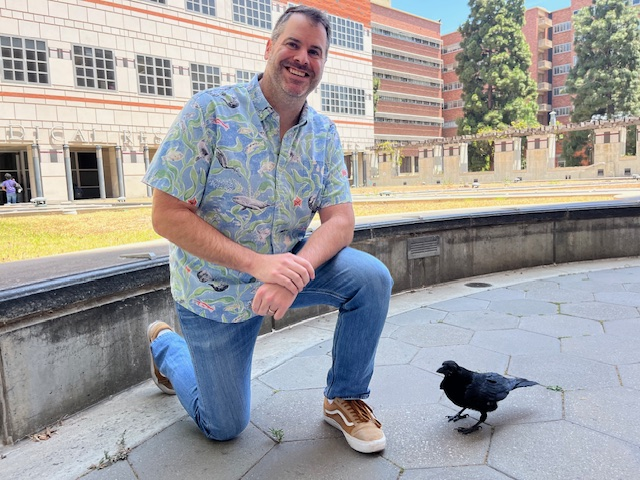

<!-- <div class="blurb">
	<h1>Andrew J. Holbrook</h1>
</div> -->

<div class="row">
	<div class="col-1">
</div>
<div class="col-3">
        
</div>
<div class="col-3">
<div class="title">
	<b>Andrew J. Holbrook, Ph.D.</b><br>
	Associate Professor of Biostatistics<br>
	Fielding School of Public Health<br>
	University of California, Los Angeles<br>
	<i>aholbroo[at]g.ucla.edu</i><br>
	<br>
</div>
	


</div>


<div class="row">
	<div class="col-1"></div>
	
	<center>
		<a href="https://scholar.google.com/citations?user=0CGN0BoAAAAJ&hl=en"><i class="ai ai-google-scholar-square ai-3x"></i></a>
		 &emsp; &emsp;  
		<a href="https://arxiv.org/a/holbrook_a_1.html"><i class="ai ai-arxiv-square ai-3x"></i></a>
				 &emsp; &emsp;  
		<a href="https://www.researchgate.net/scientific-contributions/2111018413_Andrew_Holbrook"><i class="ai ai-researchgate-square ai-3x"></i></a>
		 &emsp; &emsp;
		<a href="https://www.linkedin.com/in/andrew-holbrook-34681b291/"><i class="fa fa-linkedin-square fa-3x"></i></a>
        </center>
</div> 

